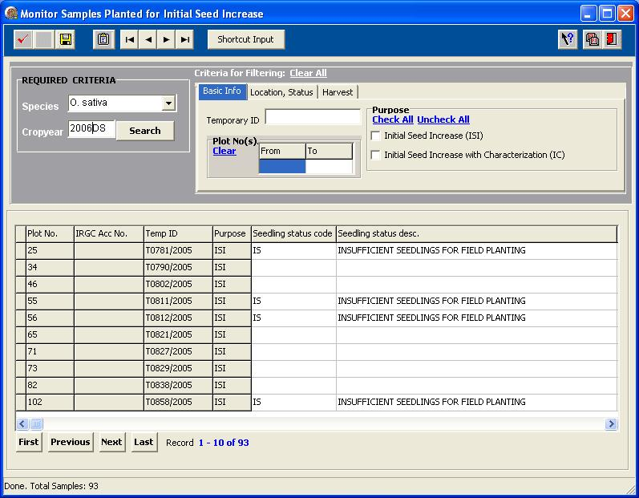
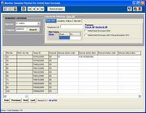
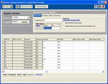
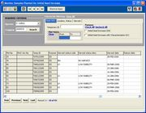
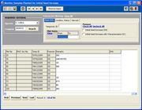
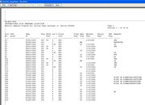
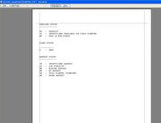
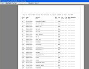

ACQ240
From ICISWiki
GRIMS main >
GRIMS functionality >
Seed Acquisition
Previous Next
Contents |
Monitor Samples Planted
Overview
The Monitor Samples Planted form allows the user to manage (search,input,edit,delete) the status of samples planted (for initial seed increase) during one cropyear. Criteria for searching includes the following: accession number, temporary ID, plot number, seedling/plant/harvest status, and remarks. The user may request for a prooflist and fieldbook for samples planted during one cropyear.
User interface forms
| 
Figure 1. Main form: Seedling status |
|  |  | 
|  |
Reports
 |  |  |
Input fields
| Field Name | Description |
|---|---|
| Plot No. | |
| Temp ID | |
| IRGC Acc No. | |
| Purpose | |
| Seedling status code | |
| Seedling status desc. | |
| Rescue action code | |
| Rescue action desc. | |
| Rescue status code | |
| Rescue status desc. | |
| Plant status code | |
| Plant status desc. | |
| Location | |
| Field Site | |
| Plant status code. | |
| Plant status desc. | |
| Harvest status code | |
| Harvest status desc. | |
| Harvest date | |
| Ratoon date | |
| Remarks | |
| SHU |
Use Case Definition
| Use Case Name | 2.4.0 Monitor Samples Planted for Initial Seed Increase(ISI)/Replanting of the Incoming Sample | ||||||||||
|---|---|---|---|---|---|---|---|---|---|---|---|
| Use Case Definition | The use case enables the actor to manage and monitor selected planted materials currently planted on different locations. | ||||||||||
| User Contacts | Field Operators | ||||||||||
| Actors | Genebank Technician | ||||||||||
| Location | Genebank | ||||||||||
| Priority | 1 | ||||||||||
| Typical Course of Events |
| ||||||||||
| Assumption/s | Creation of final seed list has been completed | ||||||||||
| Pre-condition/s | Seedlist already exists | ||||||||||
| Post-condition/s | Samples planted information stored in the database | ||||||||||
| Primary Pathway/s | Monitor samples planted | ||||||||||
| Alternative Pathway/s | DMS Workbook | ||||||||||
| Exception Pathway/s | n/a |